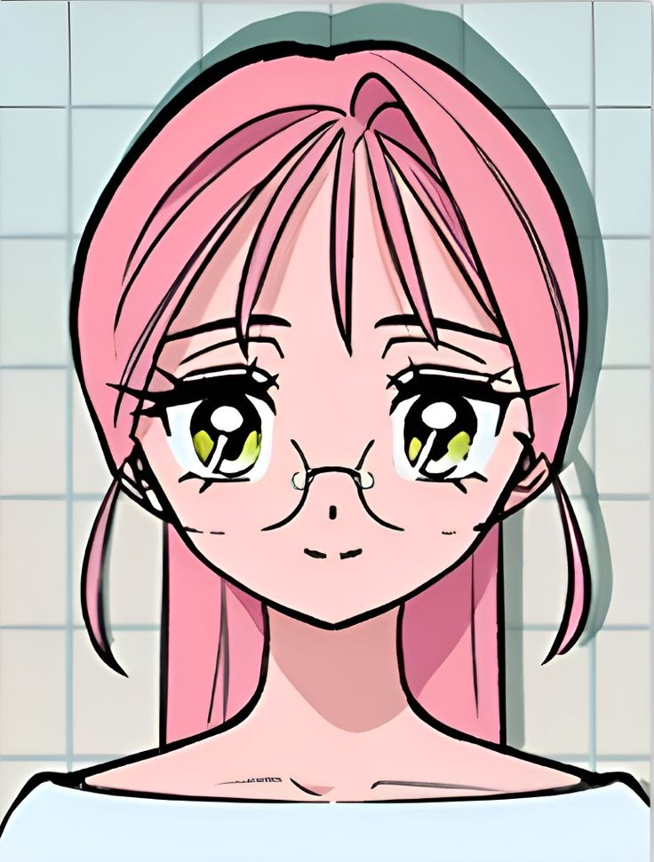
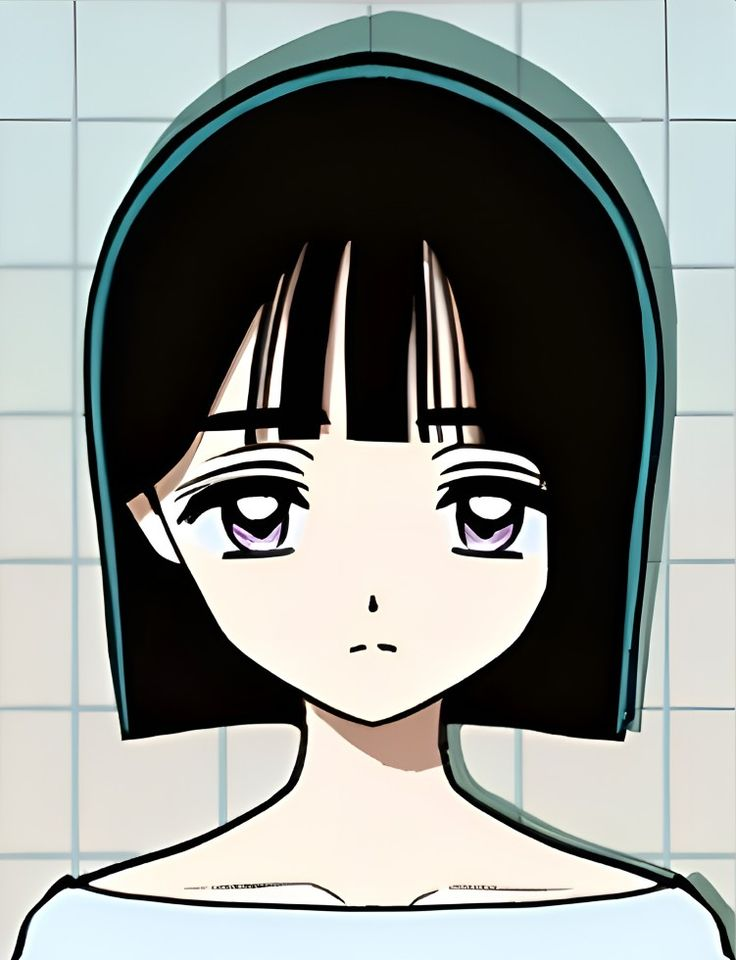
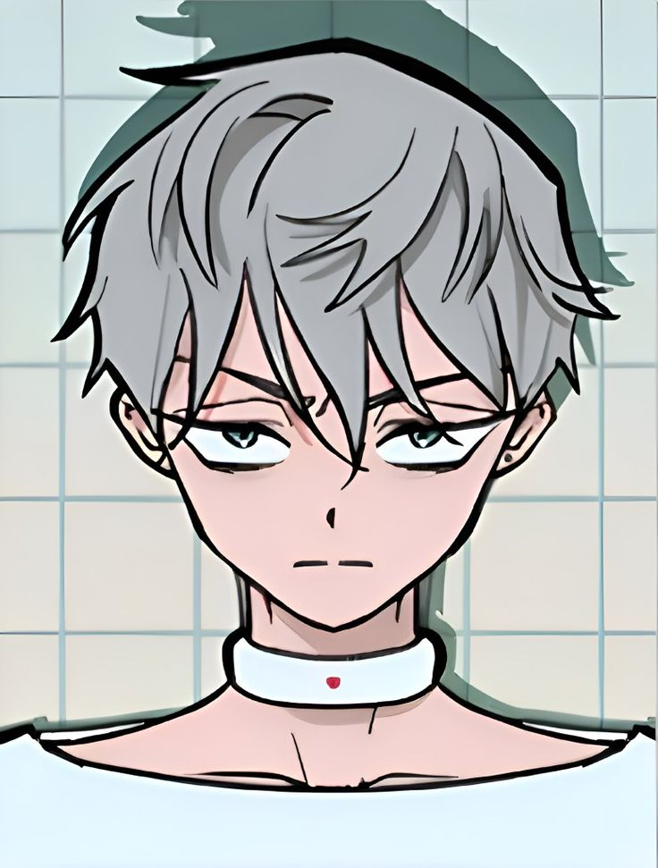
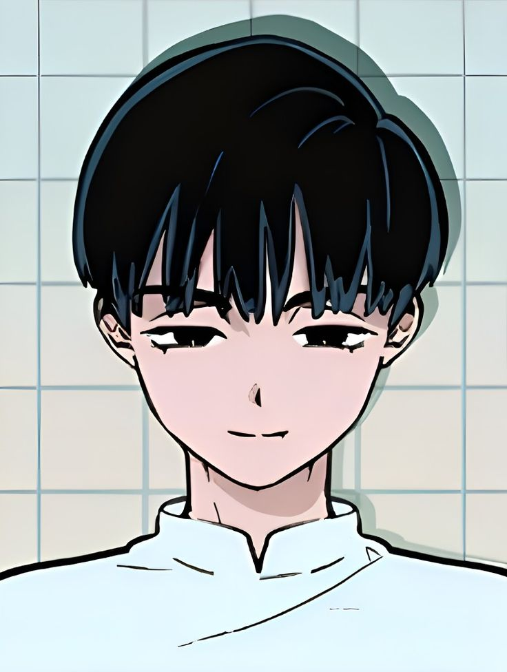
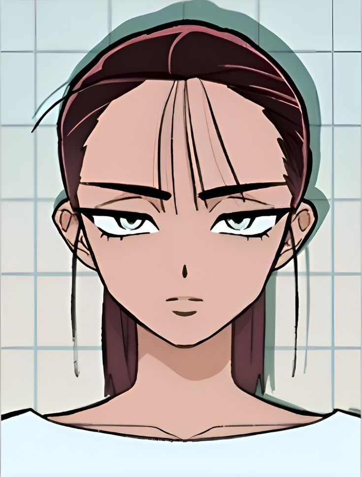
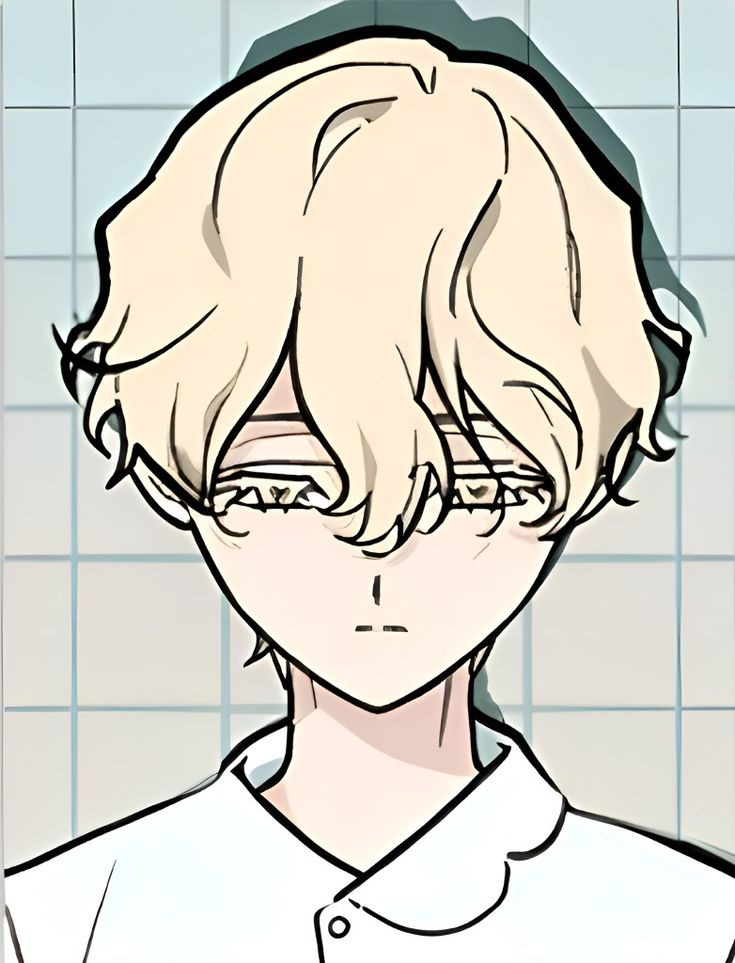
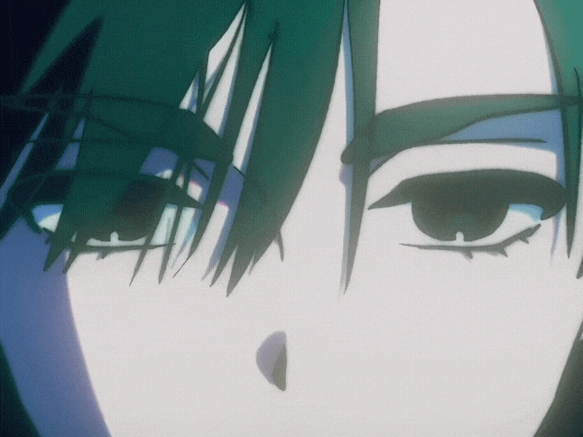
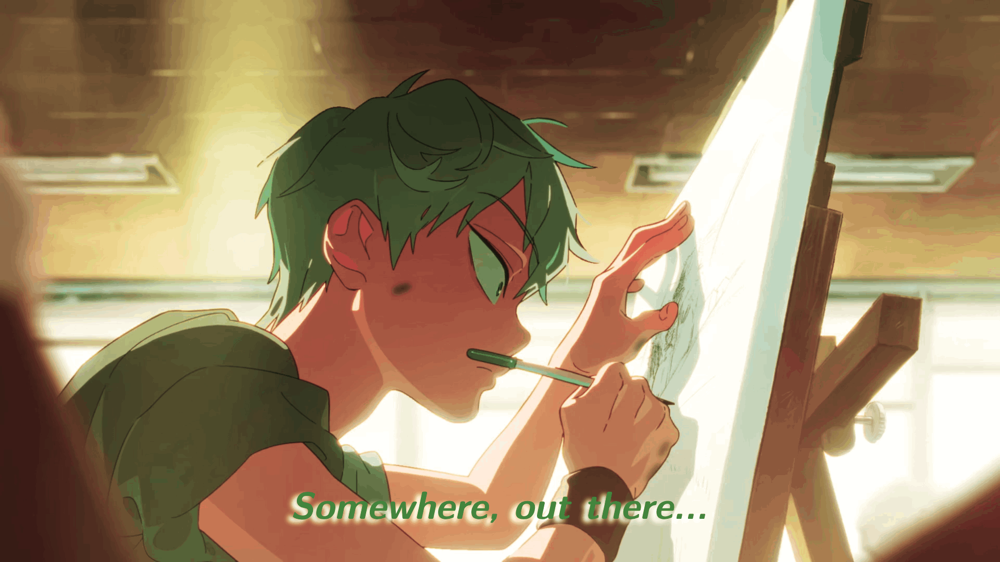

Alien Stage est un projet vraiment captivant, qui mélange avec beaucoup de talent la musique, l’animation et la narration. Chaque performance a une intensité particulière, à la fois dans les chansons et dans les visuels, ce qui accroche dès le début. Le concept est original et créatif, et on s’attache facilement aux personnages simplement à travers leurs prestations et l’ambiance. C’est une œuvre marquante qui donne envie de la revoir et d’en analyser chaque détail.
À propos
Personnages

Mizi

Sua

Till

Ivan

Hyuna

Luka
Les personnages d’Alien Stage sont remarquablement bien écrits, chacun possédant une profondeur psychologique et une identité propre qui les rendent immédiatement captivants. Leurs émotions, leurs choix et leurs histoires personnelles s’entrelacent de manière subtile, ce qui permet aux spectateurs de réellement s’attacher à eux. On ressent à la fois leur humanité et leur complexité, ce qui rend l’univers encore plus immersif et touchant.
 L’animation de Alien Stage est tout simplement époustouflante. Chaque mouvement, chaque expression est soigneusement travaillé pour transmettre les émotions intenses des personnages. Le style visuel, met en valeur l’atmosphère sombre et futuriste de la série. les performances musicales sont animées avec une précision On ressent à quel point chaque plan est pensé pour captiver le spectateur.
En résumé, Alien Stage est une œuvre d’art visuelle et narrative qui mérite d’être découverte. Son mélange unique de musique, d’animation et de storytelling en fait une expérience inoubliable. Je le recommande fortement à tous ceux qui cherchent quelque chose de différent, de captivant et qui aiment les animée.